Biography
I am a Research Scientist at Stability AI, working on structured generative models toward world modeling for controllable multimodal generation.
I completed my PhD in Computer Science at the University of Maryland, College Park advised by Prof. Matthias Zwicker. After the PhD, I worked as a Research Fellow at S-Lab and MMLab@NTU with Prof. Ziwei Liu.
I was a research intern at Max Planck Institute in Saarbrücken, Germany with Prof. Christian Theobalt, and 3DV Lab at Tsinghua University with Prof. Yebin Liu, Intelligent Creation Lab at ByteDance Inc USA, and Microsoft Research Asia.

Research Interests
My research focuses on building structured and controllable generative models that enable interaction and compositionality across modalities, including text, images, video, and 3D. I am particularly interested in developing human-centric multimodal systems that can perceive, generate, and interact with complex environments.
In my work, I explore unified structured representations as a foundation for intrinsic control and interaction in generative systems, going beyond prompt-based generation.
My long-term goal is to build interactive world models that support co-creation between humans and AI agents, enabling the modeling of dynamic environments, human behavior, and long-horizon interaction.
Human-Centric Generative Modeling: StructLDM, FashionEngine, HumanLiff
Generative models for controllable digital humans using
structured latent representations and multimodal diffusion models.
Controllable Video Generation: HumANDiff, SHV4D
One-shot motion-consistent video generation with intrinsic motion control.
Human-Centric 3D Perception and Reconstruction: SurMo, EgoMoCap-Renderer, HVTR,
HVTR++.
3D Human reconstruction, motion capture, animation, and perception from images and videos.
Selected Research
Topics:
All /
Interactive Multimodal Structured Diffusion /
Controllable Video Diffusion /
3D Perception & Reconstruction
Past topics: Static Scene/Object Reconstruction, Game Engine
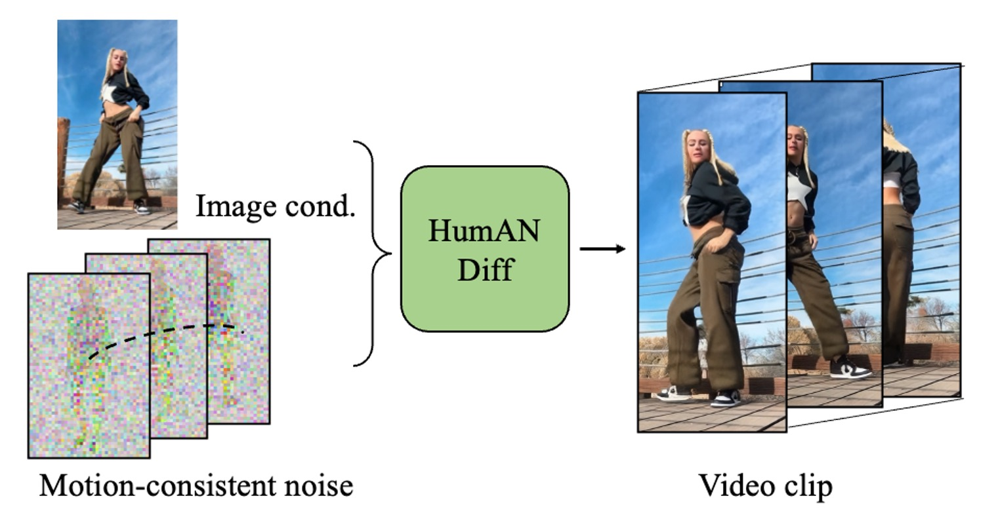 |
HumANDiff: Articulated Noise Diffusion for Motion-Consistent Human Video Generation.
Tao Hu, Varun Jampani.
Technical Report, 2026
[Paper]
[Project Page]
→ A controllable video diffusion model with model-agnostic post-training, enabling structured spatiotemporally consistent generation via structured noise sampling and joint appearance-motion modeling.
|
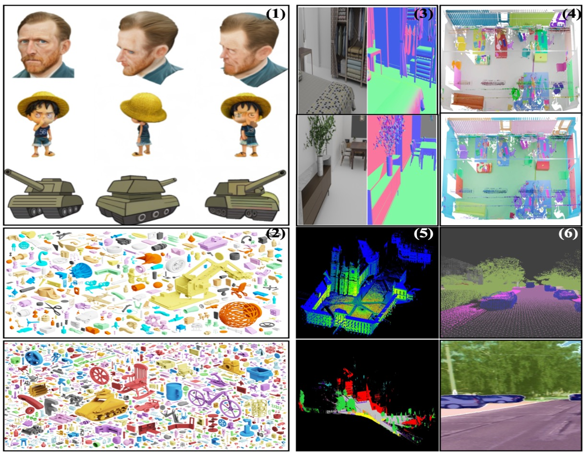 |
A Data-Centric Taxonomy for 3D Vision: Linking Representations, Augmentation, and State-of-the-Art Learning Paradigms.
Hongyang Du, Runhao Li, Dawei Liu, Haoyuan Song, Qingyu Zhang, Yubo Wang, Jingcheng Ni, Shihang Gui,
Congchao Dong, Tao Hu
CVPR OpenSUN3D Workshop, 2026
[Paper]
|
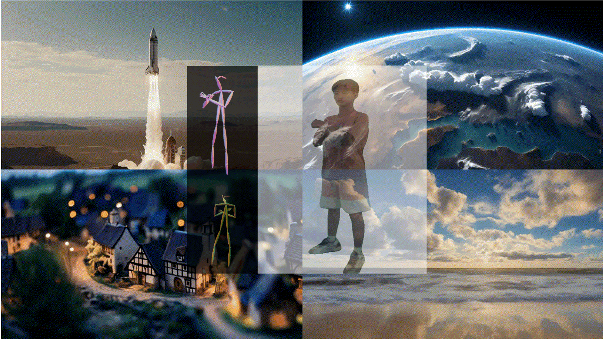 |
Human Video Generation from a Single Image with 3D Pose and View Control.
Tiantian Wang, Chun-Han Yao, Tao Hu, Mallikarjun Byrasandra Ramalinga Reddy, Ming-Hsuan Yang, Varun Jampani.
Technical Report, 2025
[Paper]
→ A generalizable framework that leverages generic video diffusion priors for controllable 4D human generation from a single image, enabling pose and camera control.
|
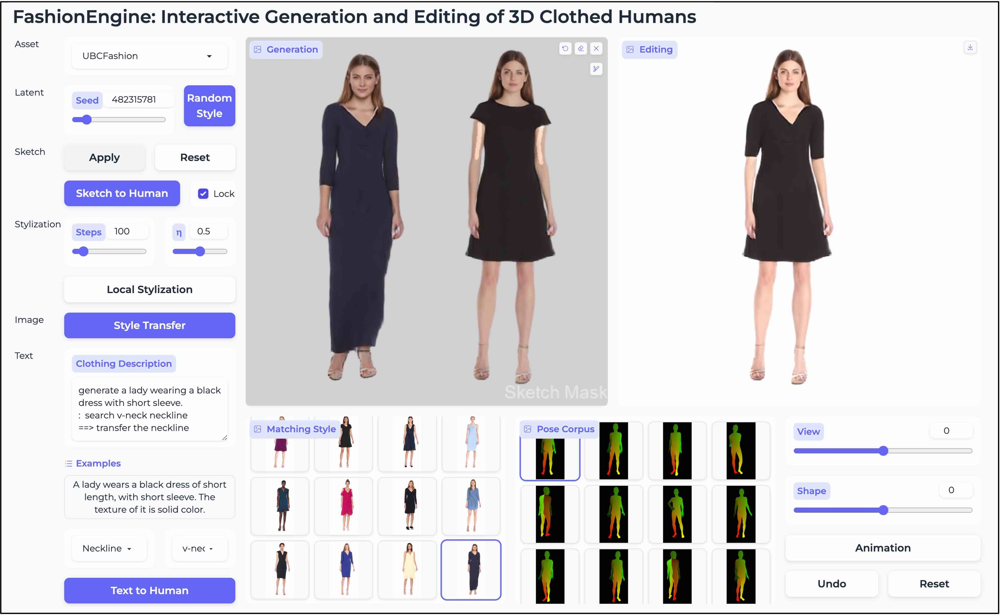 |
FashionEngine: Interactive 3D Human Generation and Editing via Multimodal Controls.
Tao Hu, Fangzhou Hong, Zhaoxi Chen, Ziwei Liu.
arXiv:2404.01655, Technical Report
[Project Page] [Video] [arXiv]
→ The first work to construct an interactive 3D human generation and editing system with multimodal controls (e.g., text, images, hand-drawn sketches) in a unified framework via structured multimodal pretraining.
|
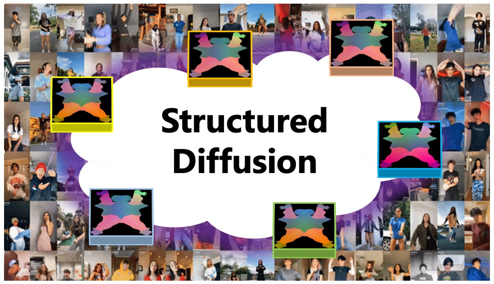 |
StructLDM: Structured Latent Diffusion for 3D Human Generation.
Tao Hu, Fangzhou Hong, Ziwei Liu.
European Conference on Computer Vision (ECCV 2024)
[Project Page] [Video]
[Code] [arXiv] [Media Coverage]
[Media Coverage in Chinese: 1, 2]
→A new paradigm for 3D human generation via structured latent representations learned through pretraining of a human prior for controllable diffusion modeling.
|
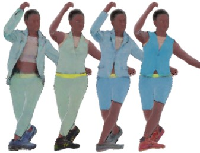 |
HumanLiff: Layer-wise 3D Human Generation with Diffusion Model.
Shoukang Hu, Fangzhou Hong, Tao Hu , Liang Pan, Weiye Xiao, Haiyi Mei, Lei Yang, Ziwei Liu
International Journal of Computer Vision (IJCV 2025)
[Paper]
[Project Page]
[Code]
→ A diffusion-based approach for layer-wise controllable 3D human generation.
|
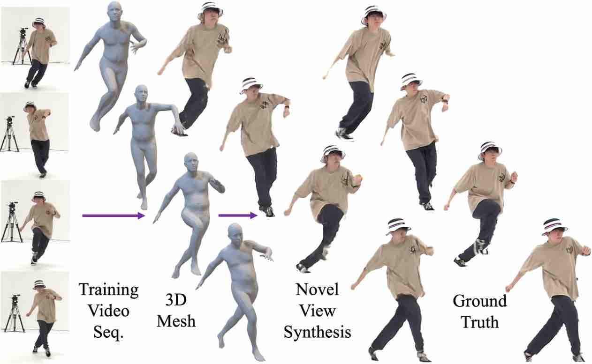 |
SurMo: Surface-based 4D Motion Modeling for Dynamic Human Rendering.
Tao Hu, Fangzhou Hong, Ziwei Liu.
IEEE Conference on Computer Vision and Pattern Recognition (CVPR 2024)
[Paper]
[Project Page]
[Video]
[Code]
[Media Coverage in Chinese: Media Heart, SenseTime Research ]
→ A new paradigm for learning dynamic human rendering from videos by jointly modeling the temporal motion dynamics and human appearances in a unified framework based on a novel surface-based triplane.
|
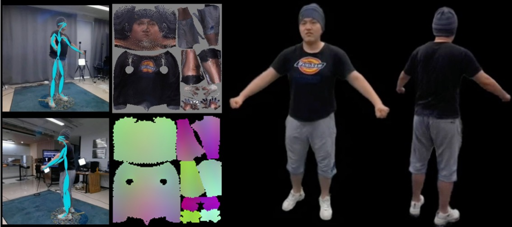 |
HVTR++: Image and Pose Driven Human Avatars using Hybrid Volumetric-Textural Rendering.
Tao Hu, Hongyi Xu, Linjie Luo, Tao Yu, Zerong Zheng, He Zhang, Yebin Liu, Matthias Zwicker.
IEEE Transactions on Visualization and Computer Graphics (TVCG 2023)
[Paper]
[Project Page]
[Video]
[Code]
→ A virtual teleportation system using sparse view cameras based on a novel texel-aligned multimodal representation.
|
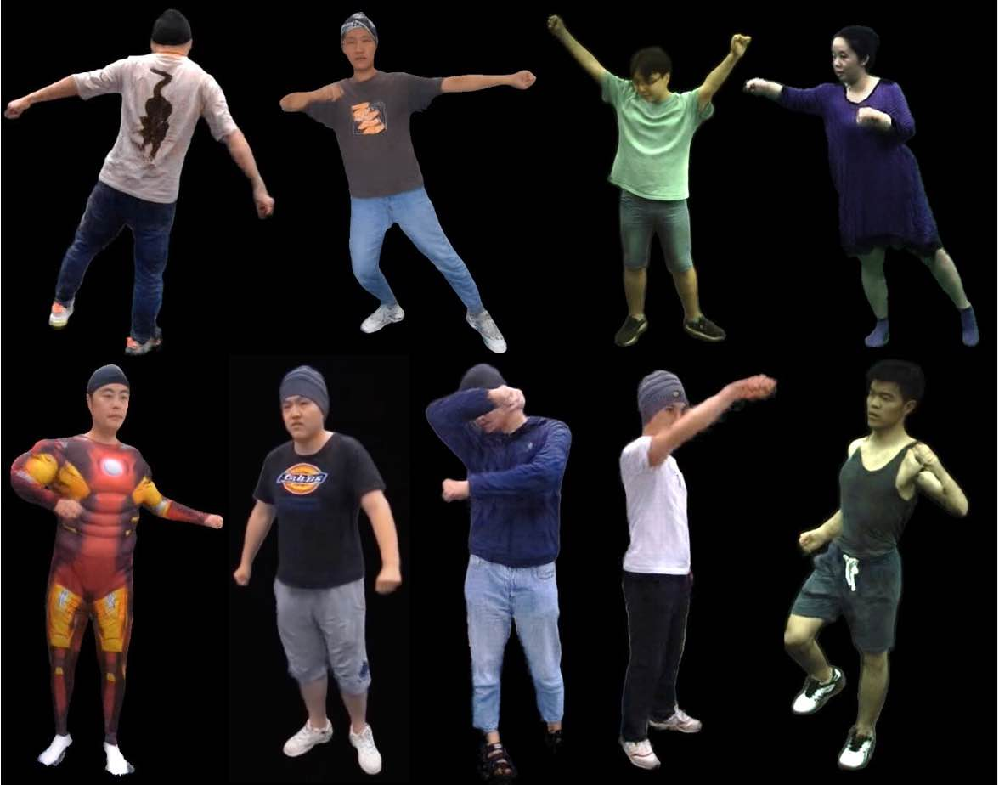 |
HVTR: Hybrid Volumetric-Textural Rendering for Human Avatars.
Tao Hu, Tao Yu, Zerong Zheng, He Zhang, Yebin Liu, Matthias Zwicker.
International Conference on 3D Vision (3DV 2022)
[Paper]
[Project Page] [Video] [Poster] [arXiv]
[Code]
→ The first work that combines classical volumetric rendering with probabilistic generative models for efficient and realistic dynamic human rendering.
|
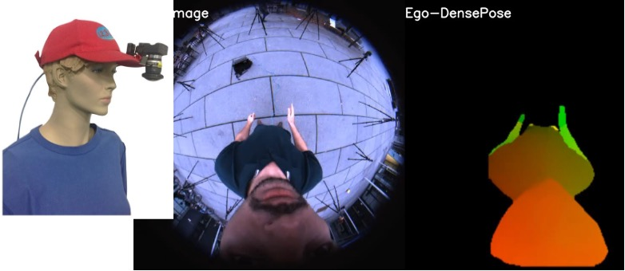 |
EgoRenderer: Rendering Human Avatars from Egocentric Camera Images.
Tao Hu, Kripasindhu Sarkar, Lingjie Liu, Matthias Zwicker, Christian Theobalt.
IEEE International Conference on Computer Vision (ICCV 2021)
[Paper] [Project Page] [Video] [Poster] [arXiv] [Media Coverage: SCIENCE & TECHNOLOGY NEWS]
→ A mobile virtual teleportation system integrating mobile motion capture and free-view rendering in a egocentric setup.
|
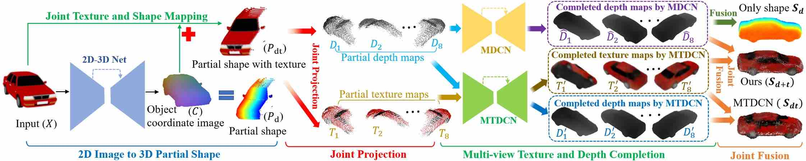 |
Learning to Generate Dense Point Clouds with Textures on Multiple Categories.
Tao Hu, Geng Lin, Zhizhong Han, Matthias Zwicker.
IEEE Winter Conference on Applications of Computer Vision (WACV 2021)
[Paper] [Code] [arXiv]
→ Extend the multi-view representation for generalizable geometry/texture reconstructions from single RGB images.
|
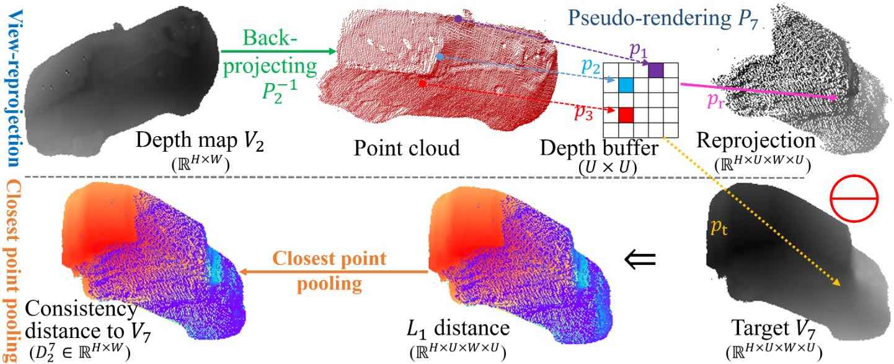 |
3D Shape Completion with Multi-view Consistent Inference.
Tao Hu, Zhizhong Han, Matthias Zwicker.
AAAI Conference on Artificial Intelligence (AAAI 2020, Oral, top 10% among accepted papers in 3D vision track)
[Paper] [Code] [arXiv]
→ Introduce a self-supervised multi-view consistent inference technique to enforce geometric consistency for multi-view representation.
|
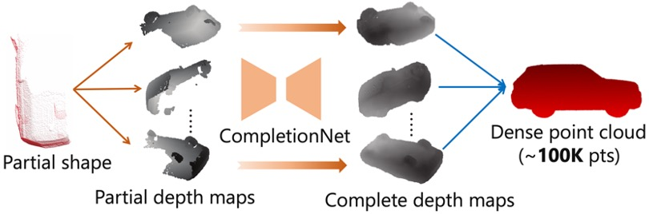 |
Render4Completion: Synthesizing Multi-view Depth Maps for 3D Shape Completion.
Tao Hu, Zhizhong Han, Abhinav Shrivastava, Matthias Zwicker.
IEEE ICCV Geometry Meets Deep Learning Workshop (ICCVW 2019, Oral)
[Paper] [Code] [arXiv]
→ Present multi-view based 3D shape representation with a multi-view completion net for dense 3D shape completion.
|
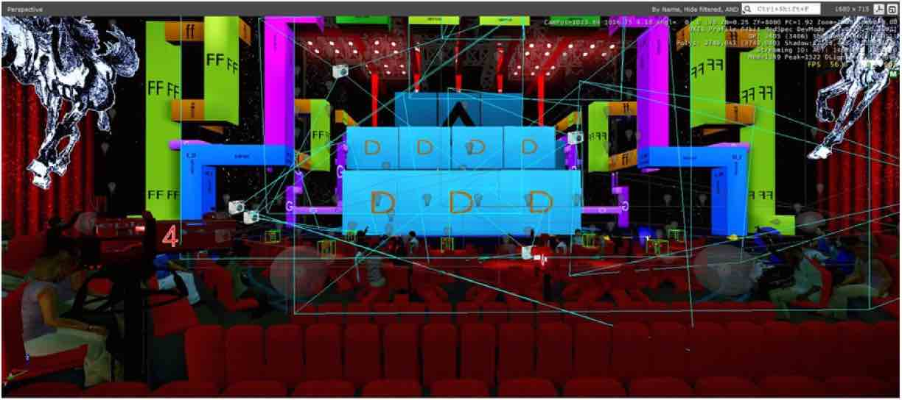 |
A Parallel Video Player Plugin for CryEngine.
Tao Hu, Gangyi Ding, Lijie Li, Longfei Zhang.
Highlights of Sciencepaper, Chinese Journal, May 2016.
→Propose a parallel video player plugin for CryEngine3 for a speedup from 16 FPS to 54 FPS at a large-scale virtual stage with 40 LED screens playing videos simultaneously for digital performance.
|
Patent & Software Copyright
Avatar Generation based on Driving Views.
Hongyi Xu, Tao Hu, Linjie Luo.
US Patent (12051168B2)
A Parallel Video Player Plugin for CryEngine.
Tao Hu, Gangyi Ding, Lijie Li, Longfei Zhang.
Software Copyright (2016SR010412)
Service
Conference Reviewer:
Conference on Computer Vision and Pattern Recognition (CVPR)
International Conference on Computer Vision (ICCV)
European Conference on Computer Vision (ECCV)
International Conference on 3D Vision (3DV)
Winter Conference on Applications of Computer Vision (WACV)
Conference on Neural Information Processing Systems (NeurIPS)
International Conference on Learning Representations (ICLR)
International Conference on Machine Learning (ICML)
Asian Conference on Computer Vision (ACCV)
International Conference on Pattern Recognition (ICPR)
IEEE Conference on Virtual Reality (VR)
Journal Reviewer:
Computer Graphics Forum
Computer Vision and Image Understanding
Image and Vision Computing
Pattern Recognition Letters
Selected Awards & Honors
Graduate National Scholarship (Top 2%), Ministry of Education of China 2016
Undergraduate National Scholarship (Top 2%), Ministry of Education of China 2014
Teaching Experience
Teaching Assistant, Dept. of Computer Science, UMD.
CMSC425 Game Programming (Prof. Roger Eastman), Fall 2019
CMSC425 Game Programming (Prof. Roger Eastman), Spring 2019
CMSC 216 Introduction to Computer Systems (Mr. Laurence Herman), Fall 2018